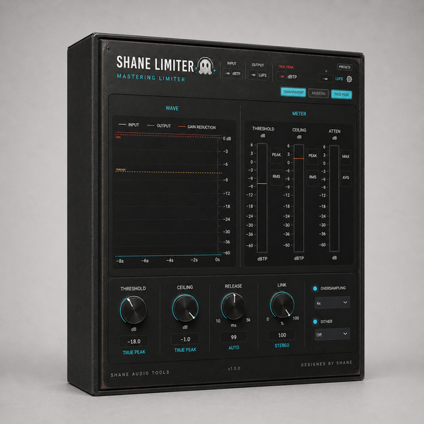
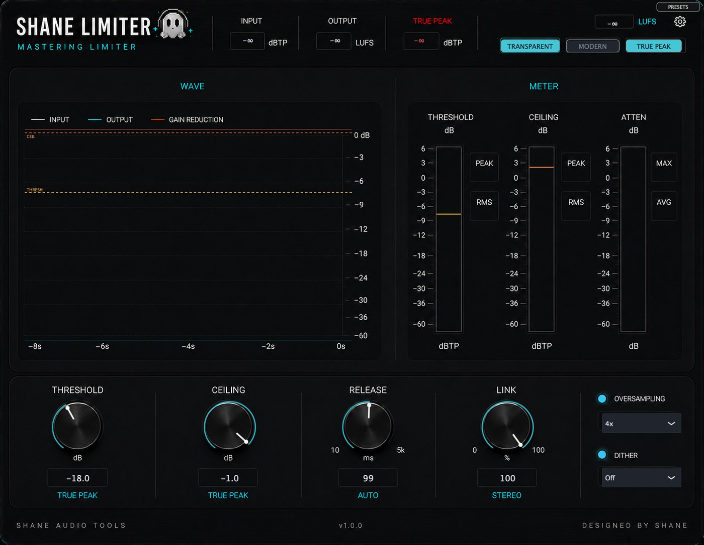

What it doesA limiter that holds the ceiling you set, including between the samples.
Reach for it whenThe last plugin on a master. Loudness work for streaming, where intersample peaks decide whether an encoder clips.
What makes it differentOversampled detection plus a separate intersample stage. Six release characters and a soft knee up to 12 dB below the ceiling.
A limiter that holds the ceiling you set, including between samples.
Catching peaks inside an oversampled path isn't enough on its own — decimating back down puts some of them straight back. There's a second inter-sample stage after the downsample that catches what the first one let through, which is why the true peak reading stays where you put it.
CONTROLS · THRESHOLD · CEILING · RELEASE · MODE Transparent · Modern · DRIVE push into the limiter · STEREO LINK · TRUE PEAK inter-sample detection on or off · OVERSAMPLING 1x · 2x · 4x · 8x · DITHER Off · 16-bit · 24-bit
WHAT'S NEW IN 1.6.2
· Reported latency was wrong in 11 of 16 settings, off by 48 or 64 samples, which pulled parallel tracks out of line. All 16 are now within one sample.
· Modern mode: switching True Peak during playback is now identical at the transition (0.000000 at 44.1, 48 and 96 kHz).
· The LUFS reading no longer races ahead when the host sends small blocks — the one-second reading differed by 5.16 LU.
· The Release Mode selector no longer sits on top of the footer text.
· Factory presets are now deterministic. They were partial, so a preset kept values from whichever preset you loaded before it.
· The Default program in the host's preset menu now actually restores the plug-in's defaults.
· Fixed a crash that could bring the host down: closing the plug-in window and then removing the plug-in left a timer running on freed data.
· Licence activation fixed: a bundle key now counts one activation per computer instead of one per plug-in, so one key covers five machines as stated.
· Rebuilt, re-signed and notarized for macOS (Universal) and Windows.
EARLIER IN 1.6
· six measured release modes, measured within 0.3 dB of the reference
REGISTRATION
· The plug-in runs unrestricted for a 7-day trial from first launch, counted separately for each plugin.
· Your licence key is on your Gumroad receipt and on the download page.
· Paste it into the plug-in once — it needs internet that one time, then works offline.
· Message me on Gumroad if you need it reset for a new machine.
FORMATS
macOS AU + VST3 + AAX (Pro Tools), Universal (Intel + Apple Silicon) Windows VST3 + AAX (Pro Tools), 64-bit
INSTALL — WINDOWS 1. Unzip. 2. Right-click "Install.bat" and choose "Run as administrator". It puts both the VST3 and the AAX version in place. 3. Restart your DAW and rescan plugins. INSTALL — macOS 1. Open the .pkg installer and follow the prompts. 2. Pick the formats you want (VST3 / AU / AAX). 3. Restart your DAW and rescan plugins.
Signed with a Developer ID and notarized by Apple — no security warnings, no Terminal commands.
Stuck, or something sounds off? Message me — I answer every one.
More plugins coming, posted gradually.
UPDATES
Buy once, updated forever. Every future build is free to you — Gumroad emails you when there is a new one. No subscription, no upgrade fee, no re-purchase.
FOLLOW ALONG
New plugins and what goes into them: